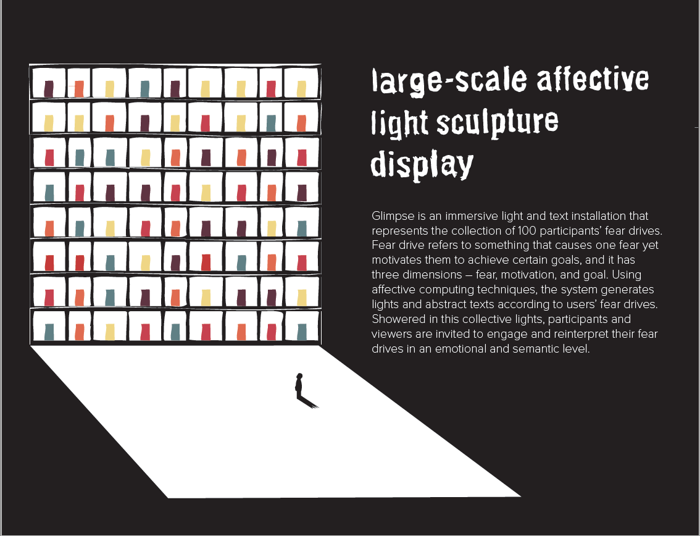
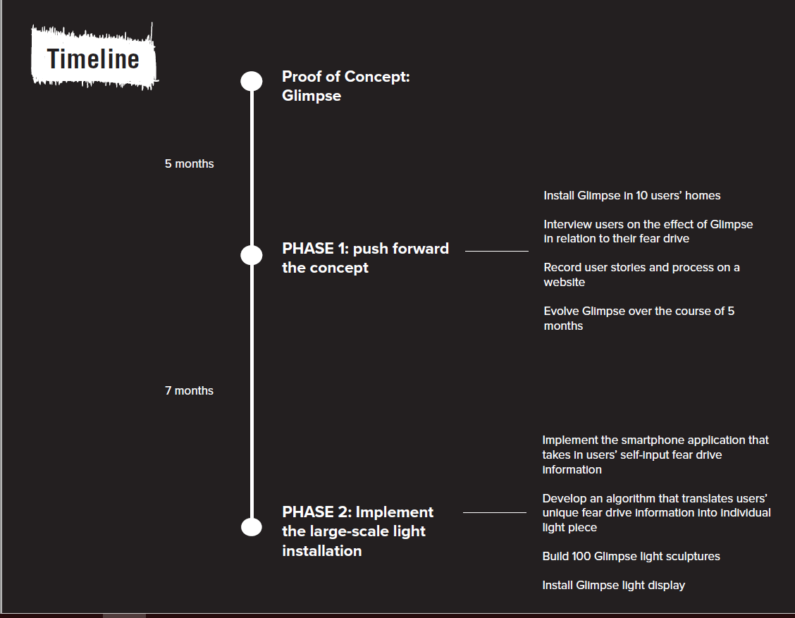

Glimpse
Visualizing fear, motivation, and goal
Experimental Research & Design

Glimpse is a device created to visualize people's fear drive, something that causes one fear yet motivates them to achieve certain goals.
This is a personal project, and is currently under review for the Adobe Creative Residency Program.
User Researcher
Interviewed 3 individuals on their fear drive
Prototyper
Developed Glimpse prototype using Arduino and various materials
Glimpse 1.0 comprises of a jar with three RGB LEDs and a paper prism. It represents an individual user's fear drive.
Fear drive refers to something that causes one fear yet motivates them to achieve certain goals, and it has three dimensions – fear, motivation, and goal. “Fear drive” and its dimensions are inductively realized from previous user research.
Previous research has shown that confrontation is an effective way to understand one’s fear drive; however, it needs not to be a daunting experience. Through Glimpse, users learn to see their fear drives as ordinary yet aesthetic objects, and are encouraged to actively contemplate about them.
This is a side project inspired by tangible emotion design, ubiquitous technologies for reflection, and affective computing technology.
How does Glimpse reflect user's fear drive?
Learn MoreThe user is first interviewed about their fear drive, and their individual interview data is classified into 3 dimensions – fear, motivation, and goal.
Through the IBM Tone Analyzer, emotional values (e.g. sadness 0.86, anger 0.12, etc.) of each dimension of user’s interview are extracted and translated into RGB LED light color. For example, 0.86 of sadness produces 0.86*255 blueness in the RGB LED.
Each dimension of the individual interview is also processed into a word cloud and cut out respectively on each side of the paper prism.
Pointing the RGD LED light from each dimension to each side of the paper prism accordingly, Glimpse invites users to engage and reinterpret their fear drives in an emotional and semantic level.
I installed Glimpse at a public room in my department building. People were welcomed to come in and view Glimpse as they pleased. I was present for the entire installation to gather feedback and to answer viewers' questions. Viewers showed great interest in Glimpse and would like to have one in their own room.
Pictures below show the installation of Glimpse as well as audiences' interactions with it.
The entire process of conception, research, and implementation took about 4 months. Below is a very brief highlight of the prototype process. Contact me to learn more!
I drafted a proposal to scale up Glimpse, and submitted it to the Adobe Creative Residency program. The project proposal is currently under review. You can view the proposal below.
This project starts from my personal investigation of my own fear drive, and I have learned to investigate things as abstract as human nature through the process of making. I have also learned the unique interaction between light and different materials (paper, glass, etc.), and have learned the importance of positioning in installation. For Glimpse 2.0, I will make sure not to arrange different sculptures in a closely packed triangular pattern, because this makes people think they are related!